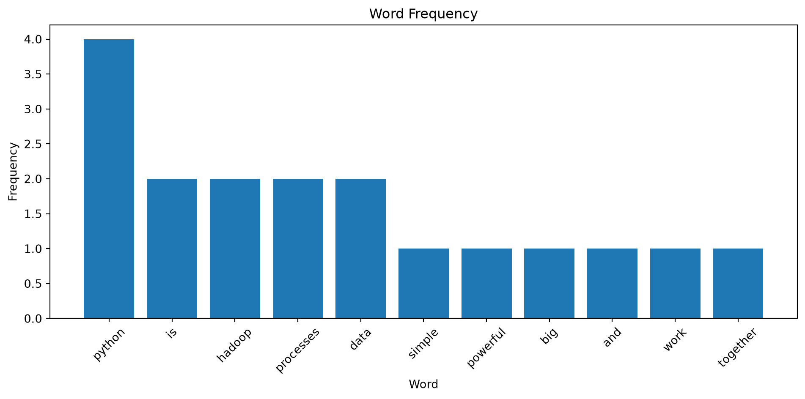

Before writing the first program, understand the basic MapReduce workflow.
INPUT DATA
|
v
+----------+
| MAPPER |
+----------+
|
v
KEY-VALUE PAIRS
|
v
+----------+
| SHUFFLE |
+----------+
|
v
GROUPED VALUES
|
v
+----------+
| REDUCER |
+----------+
|
v
OUTPUT
In Hadoop, the framework performs the Shuffle phase.
In this practical, you will implement the Shuffle phase yourself so that you can understand exactly what happens.
14 3. Demo 1 — Word Count
14.1 Objective
You will implement your first complete MapReduce program.
The problem is:
Count how many times each word occurs in a text dataset.
You will implement:
Mapper
↓
Shuffle
↓
Reducer
14.2 3.1 Create a Small Dataset
Run the following cell.
text ="""Python is simplePython is powerfulHadoop processes big dataPython processes dataHadoop and Python work together"""print(text)
Python is simple
Python is powerful
Hadoop processes big data
Python processes data
Hadoop and Python work together
14.3 3.2 Save the Dataset
Run:
withopen("word_count_input.txt", "w") asfile:file.write(text)print("Dataset saved as word_count_input.txt")
Dataset saved as word_count_input.txt
14.4 3.3 Read the Dataset
Run:
withopen("word_count_input.txt", "r") asfile: lines =file.readlines()print("Number of lines:", len(lines))for line in lines:print(repr(line))
Number of lines: 6
'\n'
'Python is simple\n'
'Python is powerful\n'
'Hadoop processes big data\n'
'Python processes data\n'
'Hadoop and Python work together\n'
15 4. Implement the Mapper
The Mapper should convert every word into:
(word, 1)
For example:
Python Python Hadoop
becomes:
("python", 1)
("python", 1)
("hadoop", 1)
Run the following cell.
def word_count_mapper(lines): mapped_data = []for line in lines: words = line.strip().lower().split()for word in words: mapped_data.append((word, 1))return mapped_data
15.1 4.1 Run the Mapper
mapped_data = word_count_mapper(lines)print("Mapper output:\n")for key, value in mapped_data:print(key, "->", value)
Mapper output:
python -> 1
is -> 1
simple -> 1
python -> 1
is -> 1
powerful -> 1
hadoop -> 1
processes -> 1
big -> 1
data -> 1
python -> 1
processes -> 1
data -> 1
hadoop -> 1
and -> 1
python -> 1
work -> 1
together -> 1
15.1.1 Observe
You should see output similar to:
python -> 1
is -> 1
simple -> 1
python -> 1
is -> 1
powerful -> 1
...
The Mapper does not calculate the final count.
It only produces key-value pairs.
16 5. Implement the Shuffle
The Shuffle phase groups values having the same key.
For example:
python -> 1
python -> 1
python -> 1
becomes:
python -> [1, 1, 1]
Run:
from collections import defaultdictdef shuffle(mapped_data): grouped_data = defaultdict(list)for key, value in mapped_data: grouped_data[key].append(value)return grouped_data
16.1 5.1 Run the Shuffle
grouped_data = shuffle(mapped_data)print("Shuffle output:\n")for key, values in grouped_data.items():print(key, "->", values)
Shuffle output:
python -> [1, 1, 1, 1]
is -> [1, 1]
simple -> [1]
powerful -> [1]
hadoop -> [1, 1]
processes -> [1, 1]
big -> [1]
data -> [1, 1]
and -> [1]
work -> [1]
together -> [1]
17 6. Implement the Reducer
The Reducer receives:
key -> [values]
and calculates the final result.
For Word Count:
python -> [1, 1, 1]
becomes:
python -> 3
Run:
def word_count_reducer(grouped_data): result = {}for key, values in grouped_data.items(): result[key] =sum(values)return result
17.1 6.1 Run the Reducer
word_count_result = word_count_reducer(grouped_data)print("Reducer output:\n")for key, value in word_count_result.items():print(key, "->", value)
Reducer output:
python -> 4
is -> 2
simple -> 1
powerful -> 1
hadoop -> 2
processes -> 2
big -> 1
data -> 2
and -> 1
work -> 1
together -> 1
18 7. Sort the Results
Run:
sorted_word_count =sorted( word_count_result.items(), key=lambda item: item[1], reverse=True)for word, count in sorted_word_count:print(f"{word:15}{count}")
python 4
is 2
hadoop 2
processes 2
data 2
simple 1
powerful 1
big 1
and 1
work 1
together 1
19 8. Build a Complete MapReduce Function
You have implemented Mapper, Shuffle, and Reducer separately.
Now combine them into one function.
def map_reduce( data, mapper_function, reducer_function):# MAP mapped = mapper_function(data)# SHUFFLE grouped = shuffle(mapped)# REDUCE result = reducer_function(grouped)return result
19.1 8.1 Execute the Complete Pipeline
result = map_reduce( lines, word_count_mapper, word_count_reducer)for key, value insorted( result.items(), key=lambda item: item[1], reverse=True):print(f"{key:15}{value}")
python 4
is 2
hadoop 2
processes 2
data 2
simple 1
powerful 1
big 1
and 1
work 1
together 1
20 9. Visualize the Word Count
Run:
import matplotlib.pyplot as pltwords = [item[0] for item in sorted_word_count]counts = [item[1] for item in sorted_word_count]plt.figure(figsize=(10, 5))plt.bar(words, counts)plt.xlabel("Word")plt.ylabel("Frequency")plt.title("Word Frequency")plt.xticks(rotation=45)plt.tight_layout()plt.show()

21 10. Check Your Understanding
Answer these questions before continuing.
21.0.1 Question 1
What does the Mapper produce?
21.0.2 Question 2
Why is the value 1 in the Word Count Mapper?
21.0.3 Question 3
What does Shuffle do?
21.0.4 Question 4
What does the Reducer calculate?
21.0.5 Question 5
What would happen if the Mapper produced:
python -> 5
instead of:
python -> 1
22 11. Demo 2 — Real CSV Dataset
22.1 Objective
You will now move from a manually created text dataset to a real dataset downloaded from the Internet.
We will use the Online Shoppers Purchasing Intention dataset from the UCI Machine Learning Repository.
The dataset contains online shopping sessions and includes information such as visitor type, browsing activity, and whether a purchase was made.
---------------------------------------------------------------------------NameError Traceback (most recent call last)
CellIn[34], line 3 1 print(
2"Rows:",
----> 3 len(clickstream)
4 )
5 6 print(
NameError: name 'clickstream' is not defined
clickstream.columns.tolist()
---------------------------------------------------------------------------NameError Traceback (most recent call last)
CellIn[35], line 1----> 1 clickstream.columns.tolist()
NameError: name 'clickstream' is not defined
clickstream.info()
---------------------------------------------------------------------------NameError Traceback (most recent call last)
CellIn[36], line 1----> 1 clickstream.info()
NameError: name 'clickstream' is not defined
35 24. Medium Dataset — Task 1
35.1 Count by Category
Choose an appropriate categorical column.
Calculate:
Category -> Number of Records
35.1.1 First
Solve it using Pandas.
35.1.2 Then
Implement:
Mapper
↓
Shuffle
↓
Reducer
35.1.3 Finally
Compare the two results.
36 25. Medium Dataset — Task 2
36.1 Average Numeric Value by Category
Choose a meaningful numeric column.
Calculate:
Category -> Average(Value)
Implement your own:
mapper_average(...)
and:
reducer_average(...)
Then verify your result using Pandas.
37 26. Medium Dataset — Task 3
37.1 Top 10 Categories
After obtaining your aggregated result, identify the top 10 categories.
---------------------------------------------------------------------------NameError Traceback (most recent call last)
CellIn[41], line 1----> 1 print("Rows:", len(retail))
2 print("Columns:", len(retail.columns))
NameError: name 'retail' is not defined
retail.columns.tolist()
---------------------------------------------------------------------------NameError Traceback (most recent call last)
CellIn[42], line 1----> 1 retail.columns.tolist()
NameError: name 'retail' is not defined
retail.info()
---------------------------------------------------------------------------NameError Traceback (most recent call last)
CellIn[43], line 1----> 1 retail.info()
NameError: name 'retail' is not defined
43 31. Check Missing Values
retail.isnull().sum()
---------------------------------------------------------------------------NameError Traceback (most recent call last)
CellIn[44], line 1----> 1 retail.isnull().sum()
NameError: name 'retail' is not defined
---------------------------------------------------------------------------NameError Traceback (most recent call last)
CellIn[51], line 3 1 print(
2"Pandas:",
----> 3 pandas_country_revenue_time,
4"seconds" 5 )
6NameError: name 'pandas_country_revenue_time' is not defined
Replace the None values with your measured results.
61 49. Important Observation
Do not assume that Python MapReduce will always be faster than Pandas.
You are currently processing the data on a single machine.
Pandas uses highly optimized internal implementations, whereas our MapReduce implementation is intentionally written in straightforward Python so that the processing model is visible.
The objective of this practical is:
Understand how a data-processing problem can be expressed using Map → Shuffle → Reduce.
The objective is not to demonstrate that manually implemented Python MapReduce is faster than Pandas.
62 50. Reflection
Before moving to Part 2, answer the following questions.
62.1 Question 1
What is the purpose of the Mapper?
62.2 Question 2
What is a key-value pair?
62.3 Question 3
Why is the Shuffle phase necessary?
62.4 Question 4
What does the Reducer do?
62.5 Question 5
Can one input record generate multiple key-value pairs?
Explain with an example.
62.6 Question 6
Can multiple input records generate the same key?
Explain with an example.
62.7 Question 7
Why can a tuple be used as a MapReduce key?
62.8 Question 8
What is the purpose of a Combiner?
62.9 Question 9
Why might Pandas be faster than our Python MapReduce implementation?
62.10 Question 10
What happens when a dataset becomes too large to process efficiently on one machine?
62.11 Question 11
What would be required to process the data across multiple machines?
62.12 Question 12
What role could Hadoop play in this situation?
63 51. Part 1 Completion Checklist
Before proceeding to Part 2, make sure you have completed the following:
64 52. Transition to Part 2
You have now implemented MapReduce entirely using Python.
The processing model you used was:
DATASET
|
v
MAPPER
|
v
KEY-VALUE PAIRS
|
v
SHUFFLE
|
v
GROUPED VALUES
|
v
REDUCER
|
v
RESULT
However, everything in Part 1 was executed on one computer.
In Part 2, you will use Hadoop to provide:
distributed storage using HDFS;
distributed MapReduce execution;
Hadoop Shuffle and Sort;
Python Mapper and Reducer execution using Hadoop Streaming.
The workflow will become:
DATASET
|
v
HDFS
|
v
HADOOP MAP
|
v
HADOOP SHUFFLE
|
v
HADOOP REDUCE
|
v
HDFS OUTPUT
|
v
FINAL RESULT
You will reuse the MapReduce concepts learned in Part 1 and apply them to Hadoop in Part 2.